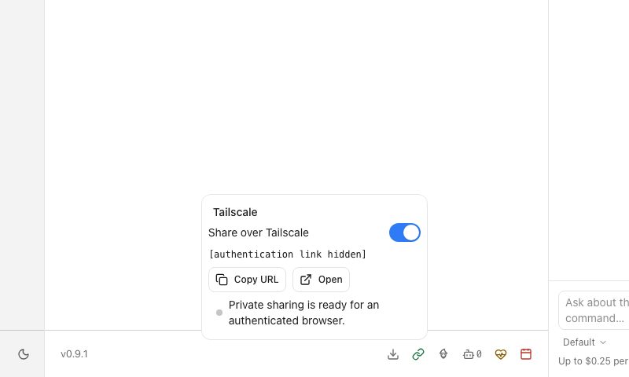
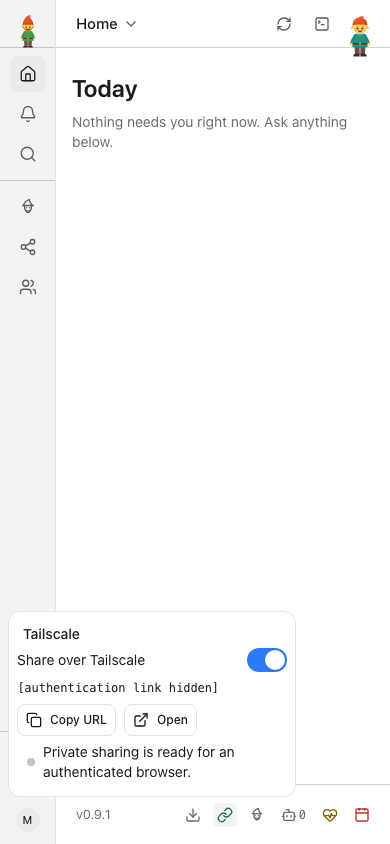
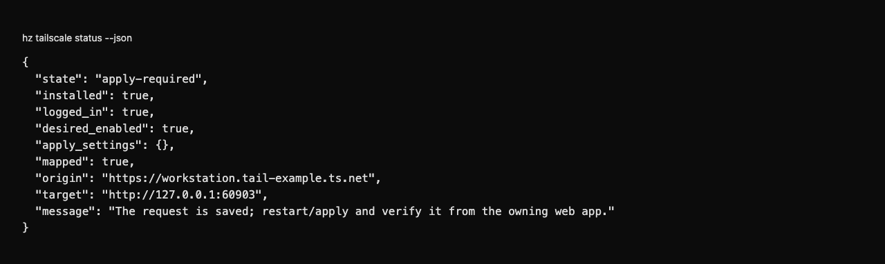
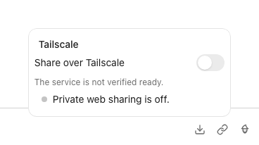
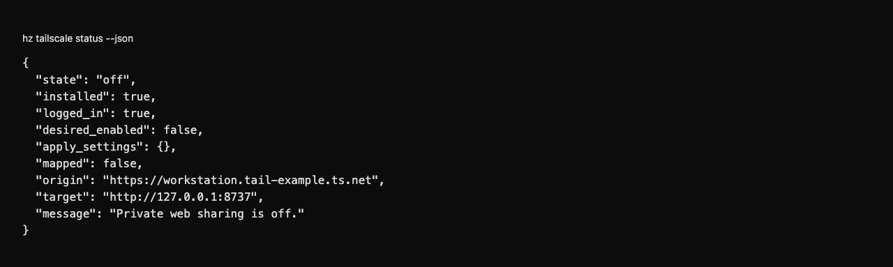

heinzel-tailscale
Isolated demonstration profile · Core 0.9.1 · Review these captures before committing. Click an image to inspect it at full size.

UI · Share the app privately with an explicit ready state — local Tailscale fixture; session hidden
UI · Inspect and copy the private link on a phone — local Tailscale fixture; session hidden
CLI · Inspect the saved sharing request from a separate CLI process — local fictional network
UI · Turn private sharing off explicitly — local Tailscale fixture
CLI · Verify private sharing is off from the shell — local fictional network